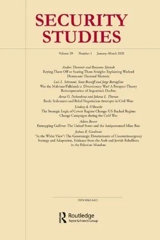
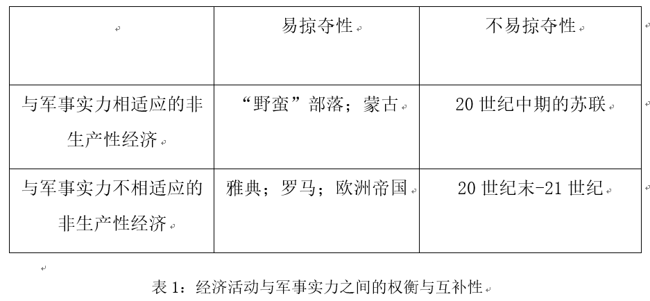
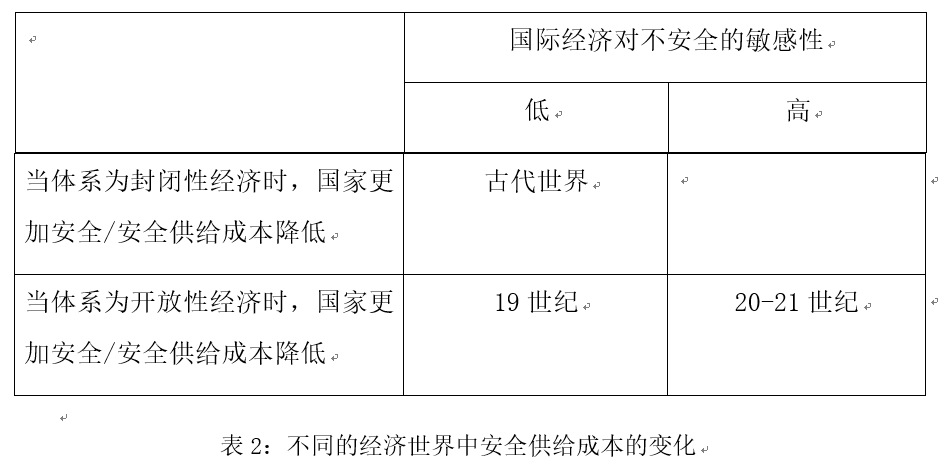
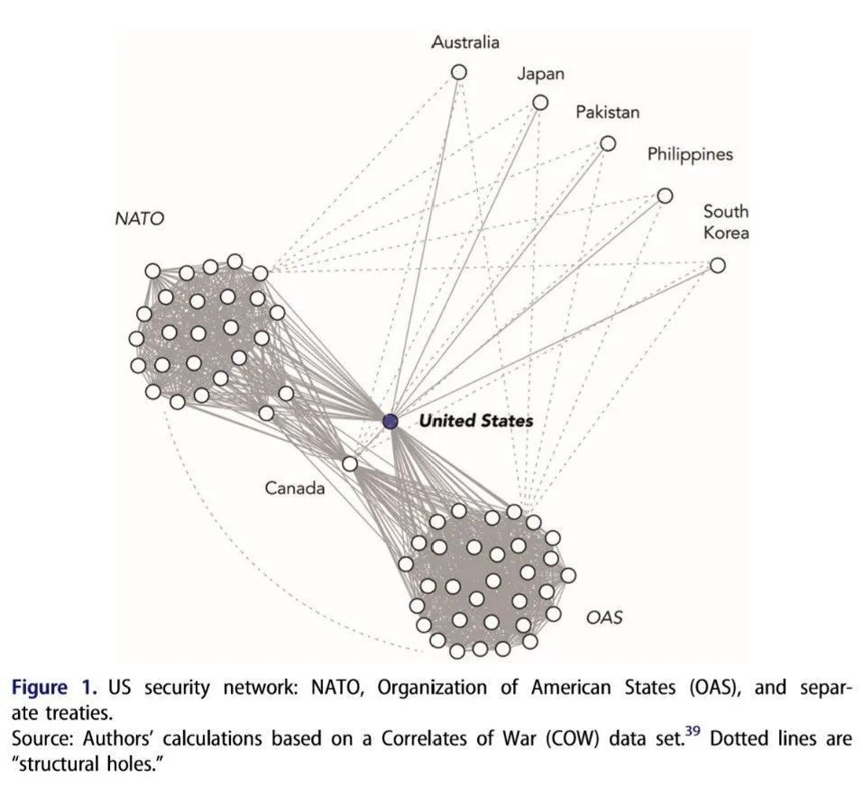
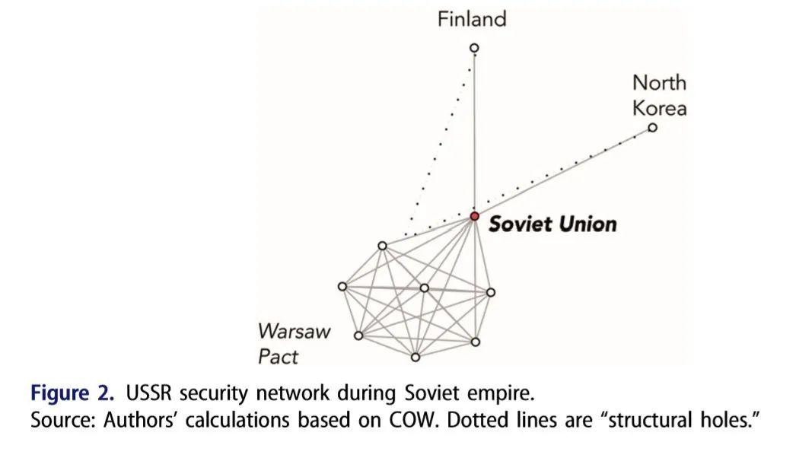
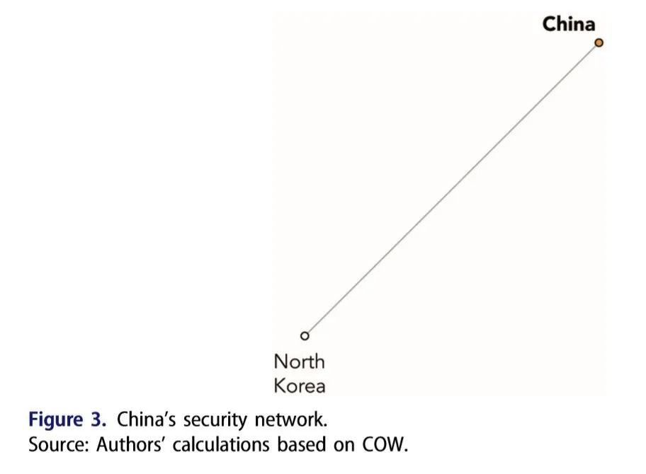

收录于合集

作品简介
【作者】 卡拉·诺尔洛夫(Carla Norrlof）, 多伦多大学政治学副教授，研究方向为国际合作理论、大国关系，美国在货币、贸易和安全领域的霸权等。
威廉·沃尔福斯（William C. Wohlforth），达特茅斯学院政府系教授，研究方向为国际关系理论、国际安全、美国外交政策、冷战及其终结以及俄罗斯外交政策等。
【编译】 王川（国政学人编译员，吉林大学公共外交学院）
【校对】 王泽尘
【审核】 陈勇
【排版】 杨洋
【来源】 Carla Norrlof & William C. Wohlforth. (2019). Raison de l’Hégémonie (The Hegemon’ s Interest): Theory of the Costs and Benefits of Hegemony. Security Studies, 28 (3), 422-450.
期刊介绍
《安全研究》(Security Studies)收录并出版具有创新性的学术稿件——无论是理论研究、实践经验分享还是两者兼而有之。安全研究包含广泛的议题，涵盖核扩散、核威慑、军民关系、战略文化、种族冲突、流行病与国家安全、民主政治、外交决策以及定性与多方法研究的发展。根据Journal Citation Reports显示，其2018年的影响因子为1.706，在91种国际关系类期刊中排名第30（30/91）。
霸权的利益：霸权的成本-收益理论
Raison de l’Hégémonie (The Hegemon’s Interest): Theory of the Costs and Benefits of Hegemony
内容提要
任何霸权秩序的命运都取决于霸权在何时、何种条件下可以获得回报。尽管针对这一问题已有相关研究传统，但仍然不够充分。作者将构建一个理论框架来填补这一空白，以便于理解霸权的成本和收益，确定影响军事保护(military protection)和经济生产(economic production)之间潜在互补性的条件。作者展现了这种关系在不同国际体系中的变化，这与之前的研究大相径庭。与美国国内政治和安全研究领域的普遍观点截然相反，作者认为在当前的条件下，军事保护和经济生产的互补关系意味着维持霸权秩序对美国仍然有利。
文章导读
维持霸权秩序是昂贵的，任何霸权秩序下的国内和国际政治都取决于主要行为体，尤其是霸权自身在其中的净收益。霸权何时获得回报？作者认为卢梭(Rousseau)和卡尔(Carr)指出了这一问题的答案，即军事力量、政治秩序和经济充裕(economic plenty)之间的关系影响霸权的利益。作者将在文中展示霸权国家在不同的国际体系中如何利用军事力量来构建有益的秩序，以及这些秩序如何反过来塑造霸权的能力(hegemon’s capabilities)。作者将国家利益的逻辑扩展到霸权的利益中。卡尔与卢梭的观点抓住了霸权秩序研究中两条缠绕的线索，但没有将其归纳进一个成本- 收益框架内，这一框架包含美国的经验并且将其置于历史模式中。首先，正如卡尔强调的，（经济）生产需要（军事）保护：经济交换依赖于政治秩序。然而，大量关于霸权秩序的著述提出了一种权衡关系(trade- off relation)，即用于保护的资源是从生产活动中转移而来的，组织暴力能力的成本随着保护规模的扩大而增加，从而威胁经济福祉。其次，卢梭强调了另一条较少受到关注，并且理论化程度仍不高的线索：保护和生产之间潜在的互补性。在某些情况下，提供国际（军事）保护的成本补充了霸权行为体的经济生产活动。这种互补性在国内环境中被视为理所当然，其中，秩序的提供既取决于暴力能力，也是统治者的主要战略。在此，作者简单地将此逻辑拓展到一个形式上无政府体系中的领导国家。这一观点在讨论国家的形成时很常见，但在讨论霸权的成本和收益时就不那么常见了。它适用于大致对应政治秩序复杂性的三个阶段：阶段1：国内秩序与国家的形成。一个合法垄断了集体暴力能力的国家能解决无政府的问题，并允许建立一些机构(institutions)，使风险更大的经济活动在长期内成为可能。阶段2：防御外来掠夺者。军事能力保护特定领土上的行为体不受外来掠夺。阶段3：阶段1、2国内秩序逻辑的国际拓展。该阶段将阶段1、2的逻辑拓展到某些或全部国家，通过保护它们不受外来掠夺，并减轻无政府状态驱动的安全困境。如果在国家内部保护能够补充生产，那么保护和生产也可能从内部权衡转变为外部互补性。在文章的第一部分，作者讨论了最基本的军事经济互动：军事强国是否必须具有生产力才能强大？而具有生产力的经济体必须是军事强国才能保护财富吗？文章的第二部分讨论了安全与经济之间更复杂的互动：国家安全对经济开放有多敏感？国际经济对不安全有多敏感?第三部分则探讨了军事力量与经济充裕之间另一个重要的互动：在某些情况下，以大规模军事力量为中心的安全网络产生的社会关系，如何能以降低领导成本和提高收益的方式来补充经济力量？第四部分，作者则着眼于当前关于“美国是否衰落”的辩论，从理论中提取一组需要回答的核心问题，以确定“这一次，美国是否是真的衰落？”
一、生产经济活动和军事实力
不同的国际体系中，霸权的军事能力（保护）与经济（生产）之间的关系不同，保护与生产之间的互补性不同，因此，成本与收益也不相同。第一组互动与生产经济活动和军事实力有关，它们随时间变化而变化。主要的变化取决于军事实力对财富的必要程度以及国民经济生产力(civilian economic productivity)对军事实力的必要程度。 （见表1） 当强国可以通过武力攫取经济资源时，军事力量对于保护和获取财富来说是必要的。在这种情况下，军事弱国可以创造财富，但不能保护财富。军事强国不需要创造财富，但可以通过征服和掠夺弱国来获取财富。在这种情况下，国家即使不具备富有生产力的国民经济，也可以富裕，但没有军事能力则不能富裕。易掠夺性(easy lootability)显然会影响军事力量强大的经济掠夺国家的收益能力。不具备经济生产力的军事强国通常会征服或掠夺生产力较强的国家（表1西北象限）。在这样一个“自然状态”的世界中，强大军事力量的经济效益显而易见。在其它案例中，可以通过掠夺获取财富，但国民生产对军事力量而言是必需的（表1西南象限）。军事强国仍可进行袭击，但征服获得的战利品不足以维持军事实力，这意味着本国需要具备经济能力。完全依赖战利品增强军事实力的国家，将被兼用对外掠夺与国民经济生产的国家所击败。直至20世纪中叶，这种混合战略对取得大国地位而言仍十分必要，同时解释了殖民国家（例如西葡英法荷德等国）相对于非殖民国家的优势。经济生产力相对低下的国家可能会试图通过大规模的资源开采抵消经济活动与军事实力之间的权衡，例如20世纪中叶的苏联（表1东北象限）。但后工业革命与信息革命使得这种做法难以为继。苏联是在一种反对掠夺的体系环境中建立并存续的，因此按历史标准来说，它的存在是短暂的。从工业革命后到21世纪初（表1东南象限），这种反对劫掠的体系环境日益流行。然而，在此期间，军事力量继续在创造和使用财富的过程中发挥作用。因此，从某种程度上讲，财富仍然源自军事力量。
**贸易国、霸权与搭便车
**
20世纪70、80年代，许多学者认为美国已步入了霸权衰落的周期。他们普遍认为，美国衰落的原因多源于其内部，但美国霸权面临的问题也日益突显。美国维持其全球角色的成本在增加，而相对于不断崛起的挑战国，美国的经济实力正在下降。维持美国军事优势的机会成本不断增加，导致美国的经济增长速度相比于非霸权国明显放缓，加剧了美国面临的经济挑战。同时，（军事）保护成本正在增加，这一方面与美国的全球角色有关，特别是面向竞争对手的技术扩散，使得更多的竞争对手具有更强的动机与能力来制衡美国权力，另一方面也与美国的一种倾向有关，即在现有资源日益减少的情况下，美国仍倾向于作出更多的承诺。以理查德·罗斯克兰斯(Richard Rosecrance)《贸易国家的兴起》一书为代表的学界主流观点认为，由于国际关系正朝着更强调经济而非安全的方向发展，20世纪末最强大、最成功的国家是那些通过军事控制避免领土扩张，并试图通过国际贸易与投资发展其经济的国家（日本和西德）。 上述现象促进了那个时期公共产品理论的关注， 学者们普遍认为由一个主导行为体提供的安全保障往往过于沉重，而其他国家则会选择搭便车。 当时的争论集中于美国自己能否以某种方式退出军事化竞争的“原始”世界，或让其盟友承担更大负担。整个争论都是以权力- 保护的权衡为前提的，即美国可能是一个贸易国家，也可能是一个军事大国，而不能是两者兼有。但本文认为 这种观点忽视了经济生产与军事实力之间的互补性。
二、 不同全球经济环境下的安全成本
第二组随时间而变化的互动涉及经济的相互依赖及其对安全冲击的敏感性（表2）。为了确定互补性何时会出现，作者首先分析了全球经济对不安全的敏感性。 在体系不安全不会损害经济开放性的世界中，（军事）保护与（经济）生产之间不会产生潜在的互补性，这与全球化前的世界相对应。在其他环境下，体系的不安全影响着国际经济，安全的国际体系对全球经济繁荣十分重要，这与全球化的世界相对应。作者认为，如果经济开放实际上促进了和平并降低了威胁程度，那么为保障开放经济而付出军事努力的潜在安全收益就会增加。如果经济开放下的安全成本较低，那么为经济开放提供安全可能会在长期内降低总体成本。因此，作者假设了这样一种环境，即 霸权国为支持全球经济开放而部署军事力量所使用的资源，从长远来看是对其（军事）保护利益的补充 。总之， 表2展现了三种世界： 第一，国家在封闭性经济下更加安全，而国际经济对不安全并不特别敏感，这与现代化之前的世界相对应；第二，国家在经济相互依赖下更加安全，而国际经济对不安全同样不敏感，这与19世纪的世界相对应；第三，国家在经济相互依赖下更加安全，但国际经济对不安全高度敏感。
**霸权的利益与冷战后期的互补性
**
作者认为，20世纪80年代研究美国霸权秩序的学者们的主要分析缺陷在于，将（军事）保护作为美国经济实力下降的潜在原因，而未能认识到保护与生产之间的潜在互补性。 这一时代的保护实际上通过减少长期安全净成本，以及促进生产与交换的增长而得到了回报， 即使美国盟友通过搭便车获得了福利收益，情况也是如此。 作者认为，20世纪80年代夸大美国实力下降的规模、发展轨迹与保护成本的主要原因在于学者们未能意识到战略环境（特征）不仅已转移至表1中的东南象限，而且也转移至表2中的东南象限。 在评价美国领导地位的成本增加和收益下降时，20世纪70、80年代学术界的观点淡化了一个核心假设，这一核心假设是美国大战略创始者从20世纪30年代的经验中得出的，即 相对开放的全球经济最终降低了美国的安全成本，但是这需要美国力量的支持。 而当时许多学者认为，开放加速了美国经济的扩散，造成美国军事、政治力量的扩散，增加了挑战国的能力，从而提高了保护的成本。
三、作为安全网络外部性的收益 **** ****
本文所提出的“霸权的利益”可以适用于不同体系环境下的领导国家，20世纪后期的美国是一个强有力的案例。其结果是构建了一种能够反馈与维持领导国家核心能力的霸权秩序。 社会网络的发展可能会加强保护与生产之间的互补性， 这加强了这一逻辑。霸权能力对实现安全网络内的中心度(centrality)是必要的（并非充分的）。维持不同地区的远距离联盟网络需要权力的投射。同时，地理位置也十分关键。权力投射，特别是海军能力与地理位置的结合，帮助大英帝国与美国在各自的秩序中赢得了中心位置。图1-3将美国的安全网络与苏联、中国两国进行了比较。这表明卓越的军事能力促进了网络中心度，而这一中心度促进了可能会发展为同质子群(subgroups)的相似节点(nodes)之间的安全联结(ties)。尽管中国的军事实力大幅增长，但朝鲜仍然是中国唯一的安全盟友。美国现存庞大的安全网络已大大降低了其他国家与敌对大国建立联系的可能性。许多研究霸权稳定与大战略的学者关注的是美国安全关系的成本，而非机会。他们担心与军事弱国有着广泛安全联系的大国最终将承担提供公共产品的全部成本，而其盟友却可能搭便车。 这种观点看到了基于能力分配和（集团）规模大小的成本承担，但忽略了由网络模式所造就的影响力与自主性。   “结构洞（structural holes）” 存在于某些网络模式中，这一概念是指两个国家彼此不存在连接(connections)，但他们都同第三方国家存在连接。毫无疑问，结构洞会使第三方国家从中间人(brokering)连接中受益。当某国的网络连接中不存在结构洞，但其他国家存在时，处在完全连接的国家也会从 “结构自主（structural autonomy）” 中受益，这使它在管理自己的连接时享有额外的灵活性。 网络分析为我们提供一种思考美国如何利用这些非对称性来实现自身优势的方法。由于以下四个特点，美国的安全网络无与伦比：网络的规模、网络内（与他国相比）不对等的美国能力、网络内美国的中心度，以及网络的结构。 这些赋予了美国卓越的影响力与灵活性。苏联从未丧失其安全网络。在高峰时期，苏联承诺保卫十个盟友。与美国一样，苏联是其网络的中心，也是网络中唯一没有结构洞的国家。尽管与美国相比其范围较小，但仍为结构自主提供了机会。如今的俄罗斯拥有规模类似但更弱的网络。相比之下，中国的双边安全网络显得更加无力，由于其网络的二元性，同样不存在结构洞。尽管中国经济与军事能力的快速增长引人注目，但其相对有限的从网络中心度中获益的能力仍是一个明显劣势。快速发展的社会网络文献表明， 中心位置能够提供许多优势：更多机会（利用结构洞成为中间人）、更少限制（结构自主），这会带来更好的筹码与更大的影响力。霸权国的利益需要提供外部安全（后获得的）的来自下游的回报，由此在安全网络中获得中心连接位置，并通过三种机制支撑其经济能力：第一，促进经济交换。 即使盟国可以在不作出贡献的情况下享受公共产品与安全收益，但盟国仍有强烈的动机与中心行为体保持联系，这激励它们在安全与经济事务上进行合作。它们与主导行为体的利益越一致，两者间的联系就越有价值，就越愿意保持既有的权力分配并在需要时提供支持。提供一个能使贸易和投资蓬勃发展的安全的国际环境，需要军事能力优势集中于一个行为体或某种形式的多国联盟。 第二，提供经济杠杆。 网络中心度使得霸权国能够利用其中间人潜力从不存在连接的伙伴中获得让步。中心行为体能够通过不同强度的威胁直接施压其盟国让其“作出贡献”，这些威胁包括：明确提醒以经济利益换取安全、公开质疑继续承担保护成本的承诺，以及将其排除出安全网络。对美国来说，安全供给长期以来被视为美元霸权的基础，虽然这一过程在经验上难以追踪，但学者们发现盟国更倾向于持有在军事上为其提供保护的国家的货币。 第三，促进社会化。 如果各国被社会化，共享主导行为体的目标与期望，那么它们更有可能提供支持。许多文献都承认社会权力、软实力与结构性权力的重要性。总之， 从网络视角来看，随着网络联结(ties)数量与质量的增加，安全供给有益于霸权合作的驱动因素也在增加。公共产品理论短视地将国防开支作为盟国带来的唯一“贡献”，忽略了对霸权的益处。
四、这一次是真的吗？
声称美国现在确实面临衰退危机的学者强调当前挑战的新颖性，提出了 **三个关键问题：第一，现在的体系是否已经偏离了上文所描绘的理想型的世界，从而改变了保护与生产之间的互补性？第二，即使现在仍处于存在互补性的世界中，从两极到单极的转变是否改变了安全格局，从而改变了成本- 收益的计算方式？第三，即使互补性能够适用于单极时代，向减弱的单极甚至新兴的多极化是否会导致非持续性的成本上升？
**
**是否仍处于存在互补性的世界中？
**
答案是完全如此。自20世纪80年代以来，世界似乎进一步向表1和表2的东南象限移动，意味着当前的环境仍然非常有利于保护—生产互补性。 就全球经济对不安全的敏感性而言，由于当前的生产、贸易和金融的全球化程度远高于20世纪80年代，跨国生产活动不断增加，供应链和研发网络的复杂性日益增加，高度区域一体化的不安全对全球与美国经济的危害性远甚于冷战后期。全球金融联系的情况更是如此，尤其是外汇交易和跨境投资组合的流动，包括期权和衍生品交易。就开放经济降低安全成本的程度而言，深层次的相互依赖有利于为美国安全盟友之间的合作提供更大的激励，并在包括盟友和非盟友之间的网络中产生附加效果。
**互补性是两极下的副产品吗？
**
答案是在有限的程度上是如此。 作者强调 安全同盟创建的网络融入了其它领域的网络，这些网络共同促进了社会化并融合了各种偏好，从长远来看，使合作更容易开展，降低了保护成本。 此外，美国的安全保障了实现美国目标所需的影响力，这种影响力的作用程度取决于盟友对美国在安全问题上的依赖度。逻辑和经验方面的研究都表明美国的安全供给及其在冷战时期产生的某些积极的外部影响仍然具有价值。此外，安全同盟不仅仅能起到制衡苏联的作用，有时还能管理盟友之间敌对关系。 加强同盟不仅对美国产生了净正向效应，也为处理包括反恐在内的一系列突发事件提供了重要的资源和信息。 因此，仅从逻辑上讲，作者认为从两极到单极的转变不会消除安全网络和其它网络之间的互补性互动，而是至多削弱这种互动。
**新兴的多极化会导致成本上涨吗？
**
答案是有可能如此。 在美国长期处于霸权地位的情况下，由于体系的保护可以补充生产，从长期来看，霸权的成本- 收益计算中的保护成本因全球安全的供给而降低。 霸权利益的逻辑存在一个前提，即霸权国家需要具有潜在的权力优势。 然而，当前持“美国衰落”观点的学者否定了美国能够保存维持同盟网络的能力。对此， 作者认为即使在冷战的高潮时期，美国的国防开支也很少对其经济表现产生严重的不利影响，上述观点缺乏强有力的证据支持。
五、霸权的成本-收益
霸权秩序的性质、持久性与政治性在很大程度上取决于霸权在其边界之外提供安全的成本与收益。国家的军事实力与经济能力是预测其能否实现国家目标的最基本指标，而这些物质能力之间的最优平衡和相互作用随时间而变化。为了理解维持军事实力是以牺牲经济能力为代价，还是二者之间是相辅相成的， 作者提出了两组高度关联的互动：第一组是军事实力对财富的必要程度，以及国民经济生产力对军事实力的必要程度；第二组是全球经济对不安全的敏感性，以及经济开放对国家安全的影响。 霸权利益的前提是，作为单一最大的军事和经济强国， 霸权国家必须维持其保护国际经济的能力，这既是为了能够持续从开放经济中获利，也是为了资助其军事力量。 保障国际体系安全的潜在利益远胜于简单的经济能力优势带来的利益，而追求霸权利益则提供了建立持久关系的机会，这种关系产生了协商的机会并提高了国家的自由度。20世纪80年代关于美国衰落的争论夸大了保护成本的规模、轨迹和重要性，这主要是由于他们没有认识到结构和战略环境的转变以及安全关系对经济进程的影响。更为重要的是，他们没有将针对美国霸权的成本- 收益评估置于更大的结构背景下，明确说明军事力量（保护）与经济生产活动（生产）之间潜在的互补性。
_ ** _ ** _ ** _
本文由国政学人独家编译推荐，文章观点不代表本平台观点，转载请联系授权。**__